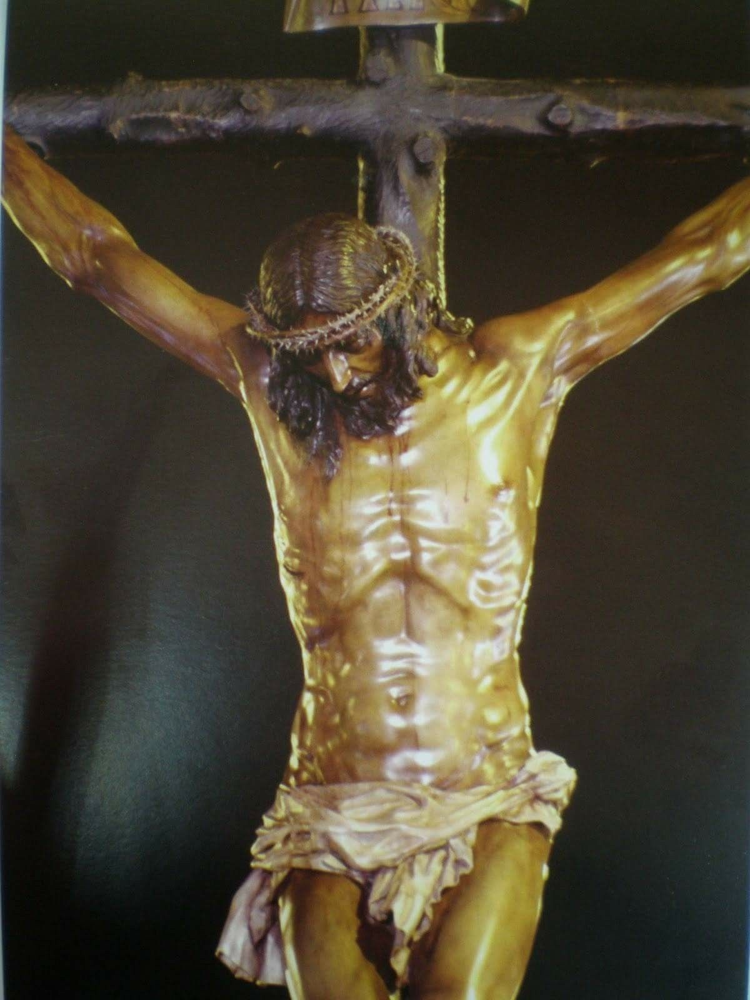

LOS GRANDES CRISTOS DE SEVILLA
Un recorrido por algunas de las imágenes de Cristo que forman parte de la historia, el arte y la devoción de Sevilla.


CRISTO DE LA BUENA MUERTE
Una de las grandes imágenes de la Semana Santa de Sevilla, vinculada a la Hermandad de Los Estudiantes. Una obra de profunda belleza y sobriedad que forma parte de la historia devocional de la ciudad.

NUESTRO PADRE JESÚS DE LA SALUD
Nuestro Padre Jesús de la Salud, titular de la Hermandad de Los Gitanos, una de las grandes devociones de Sevilla.

NUESTRO PADRE JESÚS NAZARENO
Nuestro Padre Jesús Nazareno, titular de la Hermandad del Silencio, una de las grandes devociones de la Semana Santa de Sevilla y una de las imágenes más antiguas y veneradas de la ciudad.

SANTÍSIMO CRISTO DE LAS TRES CAÍDAS
El Santísimo Cristo de las Tres Caídas, titular de la Hermandad de la Esperanza de Triana, una de las grandes devociones de la Semana Santa de Sevilla y una de las imágenes más veneradas del barrio de Triana.